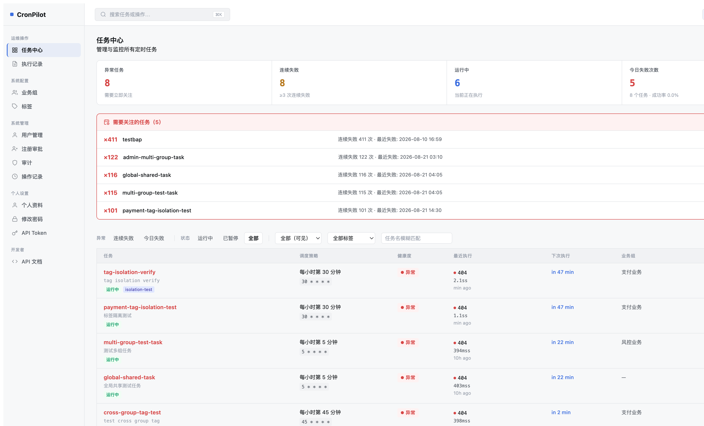
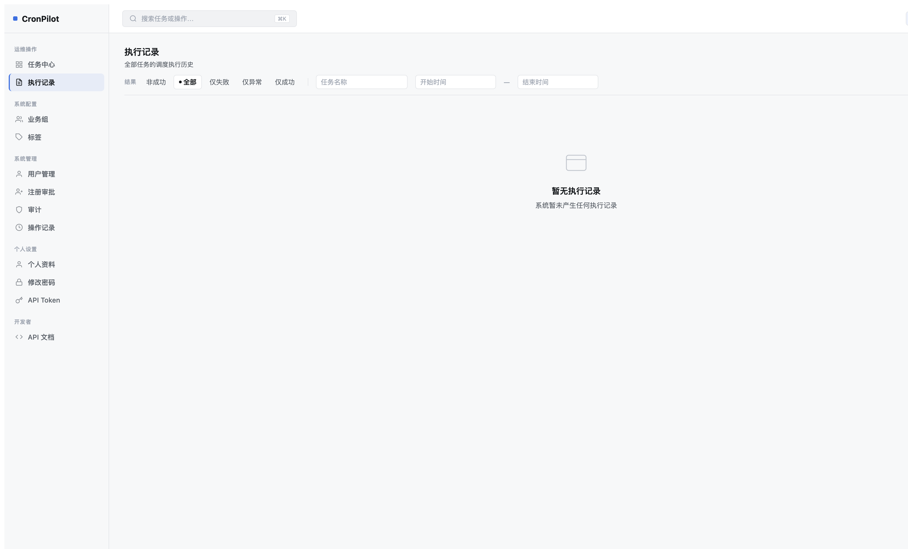
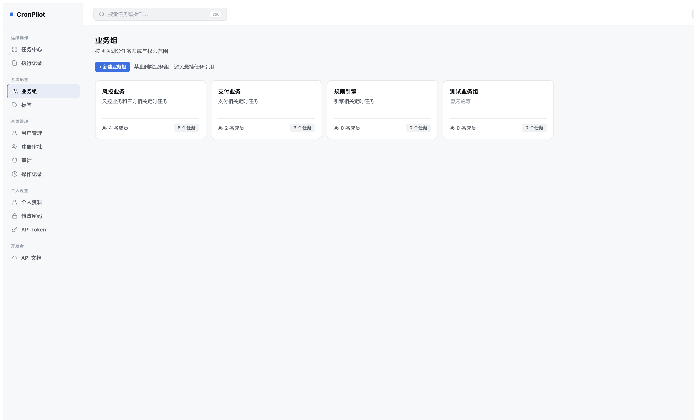
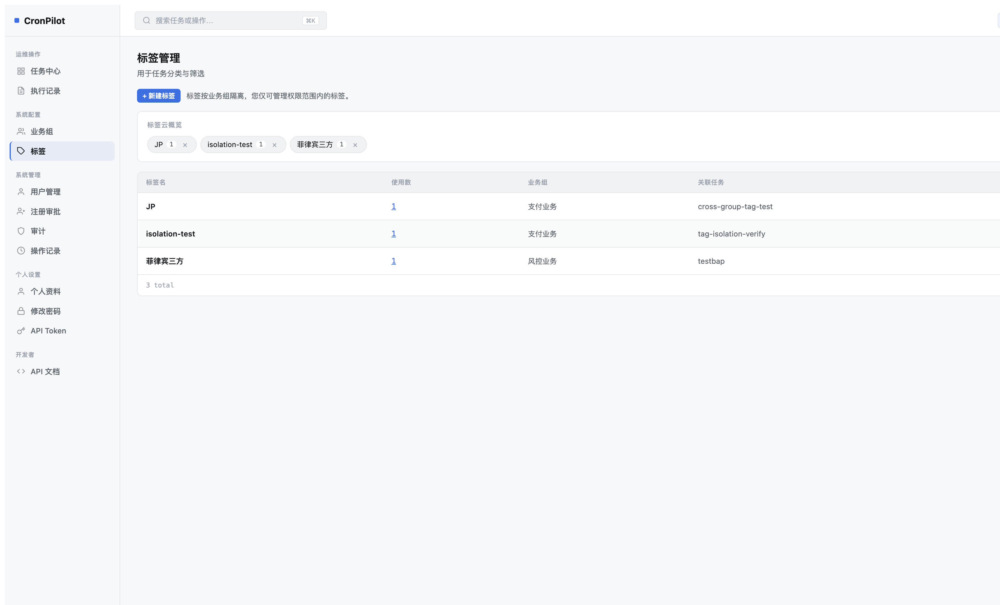
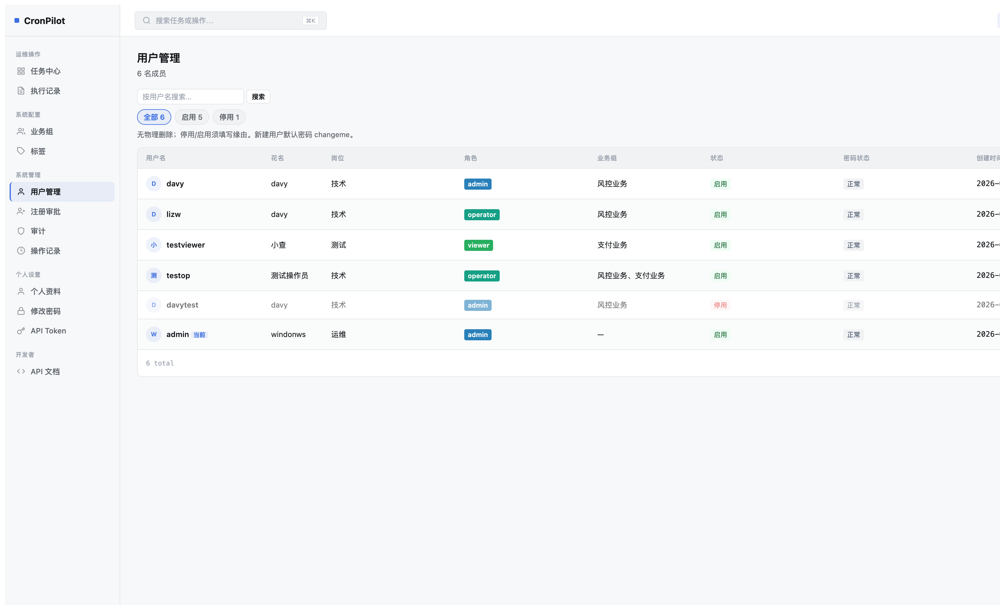
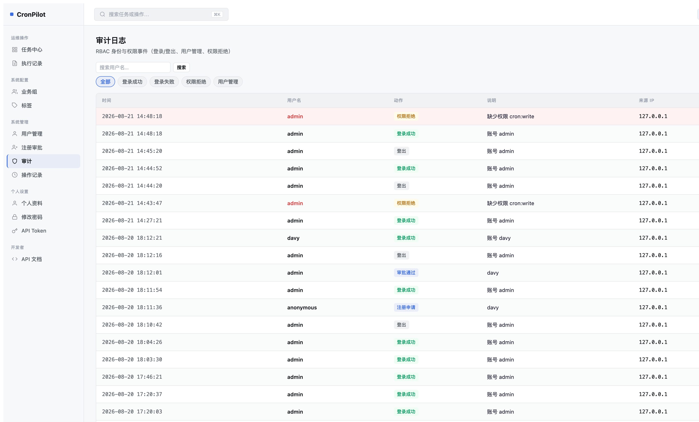
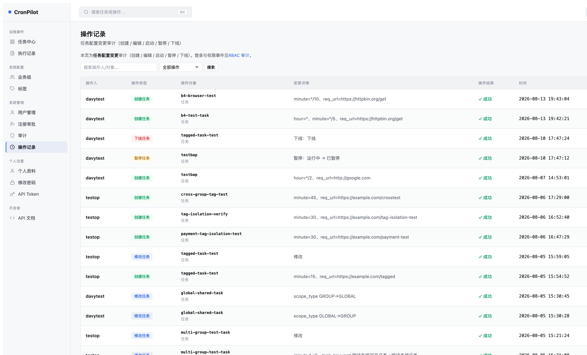
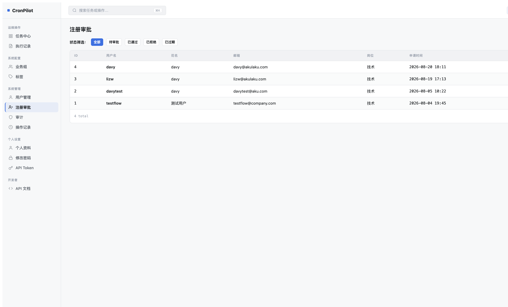

对照权威内部 Mockup：doc/design/CronPilot-2026-redesign-mockup.html（23 个视图）· 评估时间：2026-08-18





✅ 结构完全符合 Mockup。4个detail卡片（健康度/调度/最近执行/配置信息）+ 健康指标 + 最近执行列表 + 配置网格均正确实现。细节差异（额外的Esc提示、复制ID按钮）为增强功能，不视为偏差。
✅ 6列结构（时间/用户名/动作/说明/来源IP/结果）和Chip筛选器（全部/登录成功/登录失败/权限拒绝/用户管理）均与Mockup完全匹配。权限拒绝行高亮正确。

📸 注意：任务表单需要 operator 角色访问（admin/种子账号仅限系统管理）。以上对比基于模板源码结构分析。
✅ 7列结构正确（操作人/操作类型/操作对象/变更详情/操作结果/时间/来源IP）


| 优先级 | 页面 | 偏差描述 | 工作量估计 |
|---|---|---|---|
| 🔴 HIGH | 执行记录 | 7列全改（添加响应码/失败原因，移除LOG ID/返回内容） | L（视图+模板） |
| 🔴 HIGH | 注册审批 | 补充申请角色/业务组/申请原因三列 | M（模板+视图层） |
| 🔴 HIGH | 业务组 | Scope Console 展开面板（成员+权限+任务列表） | XL（新功能） |
| 🔴 HIGH | 标签管理 | 命名空间分组展示（业务域/优先级/生命周期/区域） | L（数据模型+UI） |
| 🔴 HIGH | 任务表单 | 分区卡片 + cron预设chip + 时区选择 + Lifecycle开关 | XL |
| 🟡 MED | 用户管理 | 角色▾/业务组▾筛选器 + 邮箱副标题 | M |
| 🟡 MED | 操作记录 | 时间范围筛选器 | S |
| 🟡 MED | 修改密码 | 密码强度条 + 安全提示框 | S |
| 🟡 MED | 任务中心 | chip筛选器（含数量） + 新建任务按钮位置 | M |
| 🟡 MED | 用户表单 | 安全操作区块 + 停用危险区 + 分区卡片 | M |
📌 工作量：S=1人天以内 M=2-3人天 L=4-5人天 XL=1周+